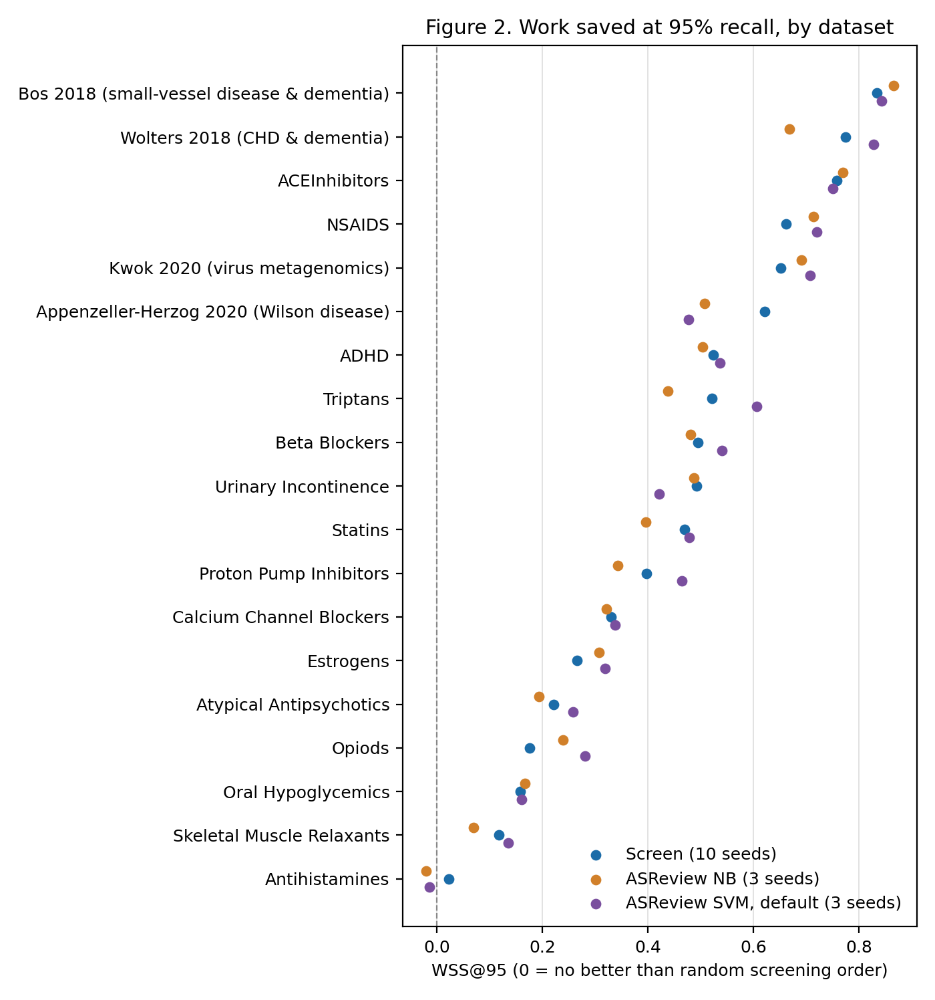
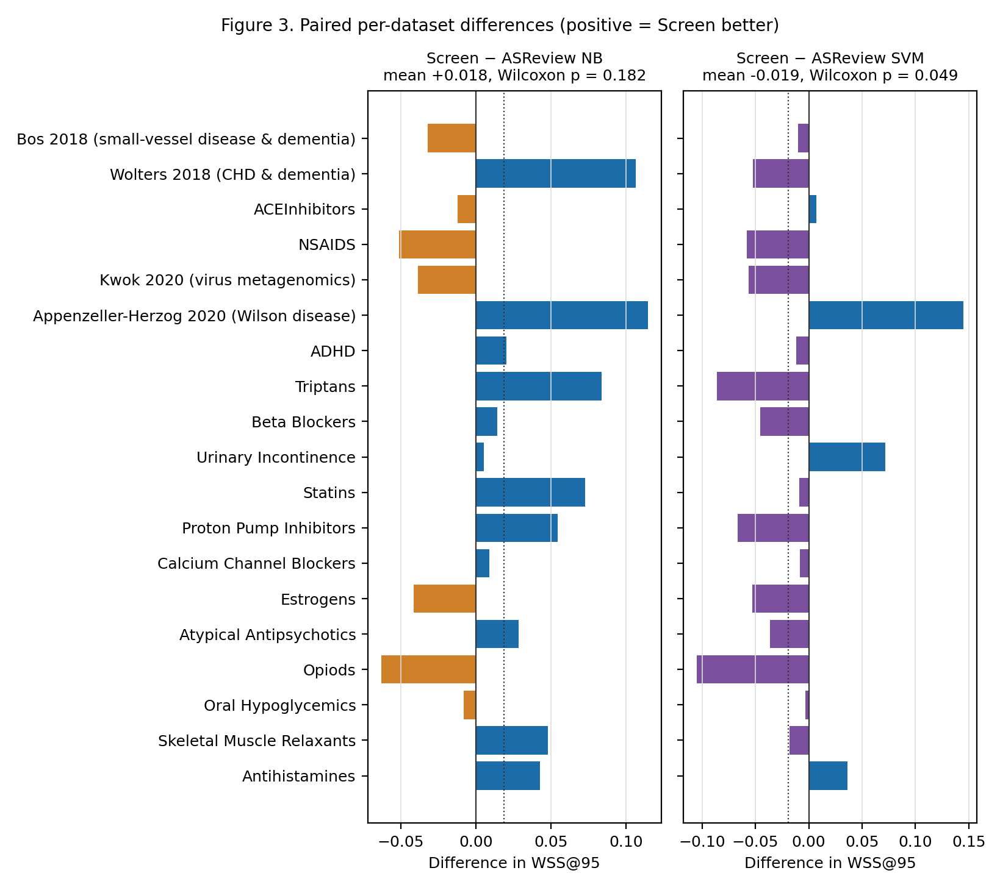
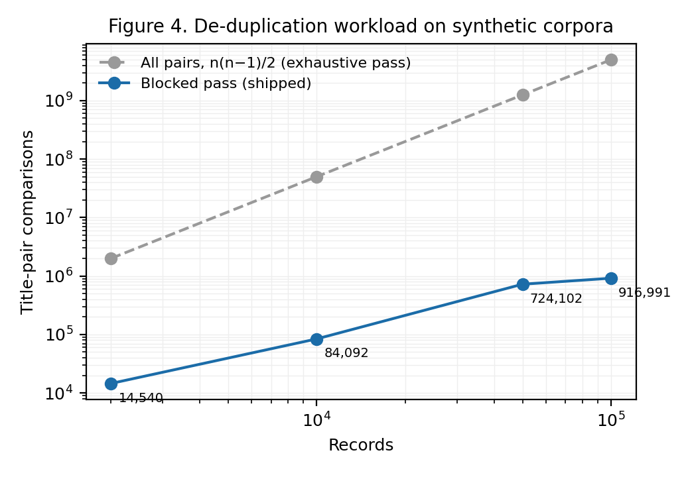
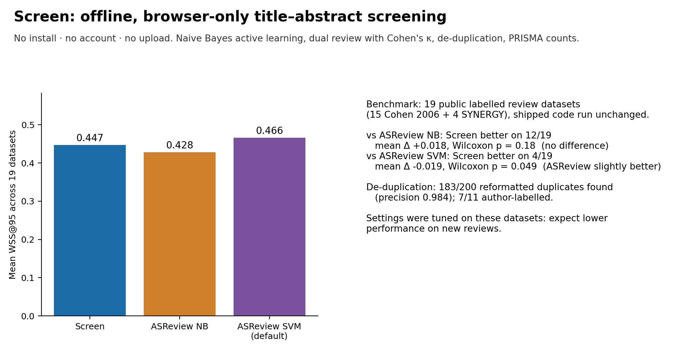

All runs · Repository · Paper archive (Zenodo) · Live app
Screen: reproducible benchmark: latest verified full run
Run 37199331989 on commit d7be2de, published 2026-10-04 12:10 UTC. Full run: every number in the paper (started from Actions -> Run workflow, mode full).
| Platform | Result |
|---|---|
| Docker (canonical) | 92/92 numbers reproduced |
| Linux | 92/92 numbers reproduced |
| Windows | 92/92 numbers reproduced |
| macOS | 92/92 numbers reproduced |
| Cross-platform comparison (corpus and engine output bit-identical on the strict platforms) | success |
Every checked number (canonical run: full-docker-outputs)
| Quantity | Expected | Reproduced | Result |
|---|---|---|---|
| screen_wss95[cohen_aceinhibitors] | 0.758 | 0.75786 | PASS |
| asreview_nb_wss95[cohen_aceinhibitors] | 0.77 | 0.76997 | PASS |
| asreview_svm_wss95[cohen_aceinhibitors] | 0.75 | 0.75045 | PASS |
| screen_wss95[cohen_adhd] | 0.524 | 0.52403 | PASS |
| asreview_nb_wss95[cohen_adhd] | 0.504 | 0.50386 | PASS |
| asreview_svm_wss95[cohen_adhd] | 0.536 | 0.53598 | PASS |
| screen_wss95[cohen_antihistamines] | 0.022 | 0.02161 | PASS |
| asreview_nb_wss95[cohen_antihistamines] | -0.021 | -0.02097 | PASS |
| asreview_svm_wss95[cohen_antihistamines] | -0.015 | -0.01452 | PASS |
| screen_wss95[cohen_atypicalantipsychotics] | 0.222 | 0.2217 | PASS |
| asreview_nb_wss95[cohen_atypicalantipsychotics] | 0.193 | 0.19345 | PASS |
| asreview_svm_wss95[cohen_atypicalantipsychotics] | 0.258 | 0.25774 | PASS |
| screen_wss95[cohen_betablockers] | 0.495 | 0.49532 | PASS |
| asreview_nb_wss95[cohen_betablockers] | 0.481 | 0.48121 | PASS |
| asreview_svm_wss95[cohen_betablockers] | 0.541 | 0.54057 | PASS |
| screen_wss95[cohen_calciumchannelblockers] | 0.33 | 0.3298 | PASS |
| asreview_nb_wss95[cohen_calciumchannelblockers] | 0.321 | 0.32083 | PASS |
| asreview_svm_wss95[cohen_calciumchannelblockers] | 0.338 | 0.33807 | PASS |
| screen_wss95[cohen_estrogens] | 0.265 | 0.26549 | PASS |
| asreview_nb_wss95[cohen_estrogens] | 0.307 | 0.30688 | PASS |
| asreview_svm_wss95[cohen_estrogens] | 0.319 | 0.31866 | PASS |
| screen_wss95[cohen_nsaids] | 0.662 | 0.66196 | PASS |
| asreview_nb_wss95[cohen_nsaids] | 0.713 | 0.71336 | PASS |
| asreview_svm_wss95[cohen_nsaids] | 0.72 | 0.72014 | PASS |
| screen_wss95[cohen_opiods] | 0.175 | 0.17517 | PASS |
| asreview_nb_wss95[cohen_opiods] | 0.238 | 0.23825 | PASS |
| asreview_svm_wss95[cohen_opiods] | 0.28 | 0.28003 | PASS |
| screen_wss95[cohen_oralhypoglycemics] | 0.158 | 0.15775 | PASS |
| asreview_nb_wss95[cohen_oralhypoglycemics] | 0.166 | 0.16604 | PASS |
| asreview_svm_wss95[cohen_oralhypoglycemics] | 0.161 | 0.16074 | PASS |
| screen_wss95[cohen_protonpumpinhibitors] | 0.397 | 0.39726 | PASS |
| asreview_nb_wss95[cohen_protonpumpinhibitors] | 0.343 | 0.3431 | PASS |
| asreview_svm_wss95[cohen_protonpumpinhibitors] | 0.464 | 0.46413 | PASS |
| screen_wss95[cohen_skeletalmusclerelaxants] | 0.117 | 0.11671 | PASS |
| asreview_nb_wss95[cohen_skeletalmusclerelaxants] | 0.069 | 0.06869 | PASS |
| asreview_svm_wss95[cohen_skeletalmusclerelaxants] | 0.135 | 0.13462 | PASS |
| screen_wss95[cohen_statins] | 0.469 | 0.46922 | PASS |
| asreview_nb_wss95[cohen_statins] | 0.397 | 0.39656 | PASS |
| asreview_svm_wss95[cohen_statins] | 0.478 | 0.47814 | PASS |
| screen_wss95[cohen_triptans] | 0.521 | 0.52079 | PASS |
| asreview_nb_wss95[cohen_triptans] | 0.437 | 0.43733 | PASS |
| asreview_svm_wss95[cohen_triptans] | 0.607 | 0.60673 | PASS |
| screen_wss95[cohen_urinaryincontinence] | 0.493 | 0.49251 | PASS |
| asreview_nb_wss95[cohen_urinaryincontinence] | 0.487 | 0.48721 | PASS |
| asreview_svm_wss95[cohen_urinaryincontinence] | 0.421 | 0.42095 | PASS |
| screen_wss95[appenzeller_herzog_2020] | 0.621 | 0.62145 | PASS |
| asreview_nb_wss95[appenzeller_herzog_2020] | 0.507 | 0.5071 | PASS |
| asreview_svm_wss95[appenzeller_herzog_2020] | 0.476 | 0.4764 | PASS |
| screen_wss95[kwok_2020] | 0.652 | 0.65202 | PASS |
| asreview_nb_wss95[kwok_2020] | 0.691 | 0.69056 | PASS |
| asreview_svm_wss95[kwok_2020] | 0.708 | 0.70816 | PASS |
| screen_wss95[wolters_2018] | 0.775 | 0.7752 | PASS |
| asreview_nb_wss95[wolters_2018] | 0.669 | 0.66893 | PASS |
| asreview_svm_wss95[wolters_2018] | 0.828 | 0.82766 | PASS |
| screen_wss95[bos_2018] | 0.834 | 0.83375 | PASS |
| asreview_nb_wss95[bos_2018] | 0.866 | 0.866 | PASS |
| asreview_svm_wss95[bos_2018] | 0.844 | 0.84378 | PASS |
| screen_mean_all | 0.447 | 0.44682 | PASS |
| screen_median_all | 0.493 | 0.49251 | PASS |
| screen_min | 0.022 | 0.02161 | PASS |
| screen_max | 0.834 | 0.83375 | PASS |
| screen_mean_cohen | 0.374 | 0.37381 | PASS |
| screen_mean_synergy | 0.721 | 0.7206 | PASS |
| asreview_nb_mean | 0.428 | 0.42833 | PASS |
| asreview_svm_mean | 0.466 | 0.46571 | PASS |
| wins_vs_nb | 12 | 12 | PASS |
| wins_vs_svm | 4 | 4 | PASS |
| mean_diff_vs_nb | 0.018 | 0.01849 | PASS |
| mean_diff_vs_svm | -0.019 | -0.01889 | PASS |
| median_diff_vs_svm | -0.018 | -0.01791 | PASS |
| wilcoxon_p_vs_nb | 0.1819 | 0.181866 | PASS |
| wilcoxon_p_vs_svm | 0.0494 | 0.049366 | PASS |
| recall_at_10pct_pct | 54 | 54 | PASS |
| recall_at_20pct_pct | 74 | 74 | PASS |
| recall_at_50pct_pct | 91 | 91 | PASS |
| buscar_never_fired | 14 | 14 | PASS |
| dedup_nagtegaal_detected | 7 | 7 | PASS |
| dedup_nagtegaal_gold_duplicates | 11 | 11 | PASS |
| dedup_nagtegaal_flagged_not_in_gold | 10 | 10 | PASS |
| dedup_reformatted_detected | 183 | 183 | PASS |
| dedup_reformatted_false_positives | 3 | 3 | PASS |
| dedup_reformatted_total_flagged | 186 | 186 | PASS |
| dedup_reformatted_recall | 0.915 | 0.915 | PASS |
| dedup_reformatted_precision | 0.984 | 0.9839 | PASS |
| dedup_reformatted_f1 | 0.948 | 0.9482 | PASS |
| dedup_blocked_vs_brute_blocked | 12 | 12 | PASS |
| dedup_blocked_vs_brute_brute | 12 | 12 | PASS |
| dedup_blocked_vs_brute_brute_only | 0 | 0 | PASS |
| dedup_blocked_comparisons[n=100000] | 916991 | 916991 | PASS |
| wilcoxon_W_vs_nb | 61 | 61 | PASS |
| wilcoxon_W_vs_svm | 46 | 46 | PASS |
| median_diff_vs_nb | 0.014 | 0.01411 | PASS |
Also as reproduction_report.md and stats.json; every run's full outputs are artefacts of the run.
Figures from this run



